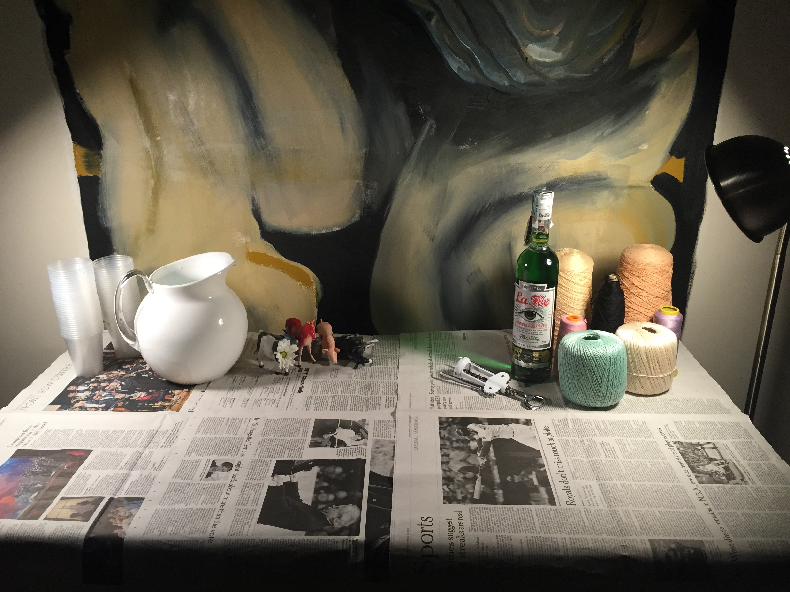
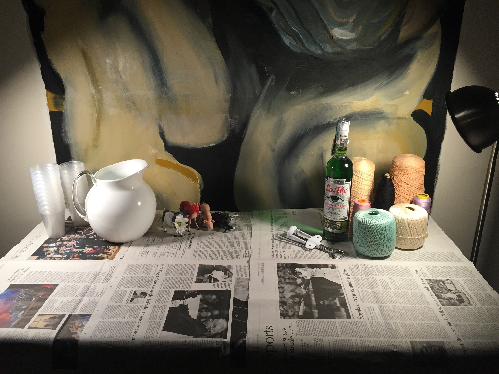

Dada Dinner
To celebrate Halloween we threw a dadaist themed dinner. I worked with Tyler Mills to transform a studio space into a theatrical environment. We had no budget to work with so we collected whatever discarded objects we could find from around the building and built a set. We used old newspapers and playing cards to cover the table. All the members of our program came dressed in costume and brought an unusual dish to serve. I made a 100 layer crepe cake and another friend brought a basin full of cereal. Tomi Okuno, who is interested in make-up design, helped get everyone in the dadaist spirit.
 
